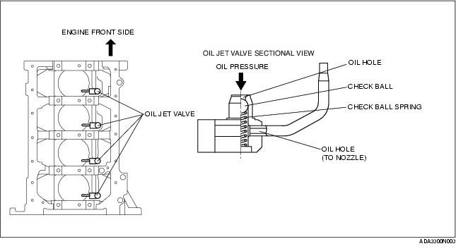

OIL JET VALVE CONSTRUCTION [ZY]
id0111001178c0
• The oil jet valves are installed in the cylinder block (side of the main journal). The piston cooling efficiency by oil injected from the nozzles has been improved thanks to the installation direction of the oil jet valves which are pointed toward the back surface of each piston.
• The oil jet valves have been designed to maintain optimum oil pressure in the engine by controlling the oil injection according to the oil pressure applied to the check ball in the oil jet valves.
